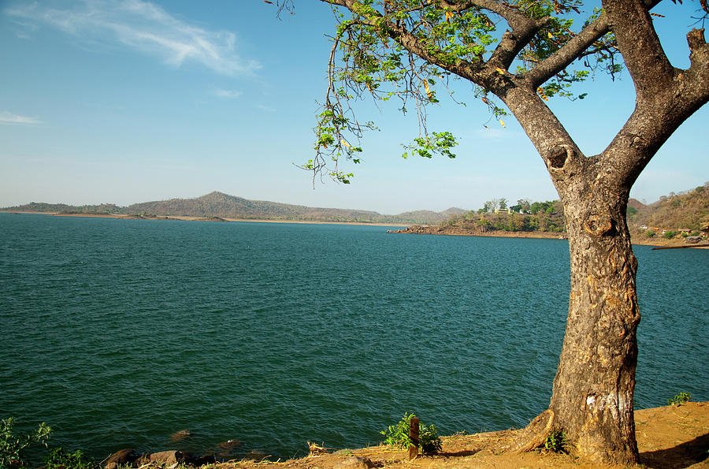

The historic Kandalama tank, a massive reservoir that serves as both a vital irrigation source and a stunningly peaceful retreat for nature lovers.
Kandalama Lake is an ancient irrigation reservoir, or "tank," that has become one of the most scenic locations in Sri Lanka's Cultural Triangle. Surrounded by lush forests and dramatic hills, it is a haven for biodiversity, attracting a wide variety of migratory birds, monitor lizards, and local buffalo.
The area is famous for its award-winning eco-hotels, most notably the Heritance Kandalama, which is flawlessly integrated into the natural cliffside overlooking the water. Exploring the lake by boat or taking a peaceful sunset walk along its banks offers a serene experience that feels worlds away from the busy town centers, showcasing the timeless beauty of the island's inland waters.
Back to Dambulla Hub